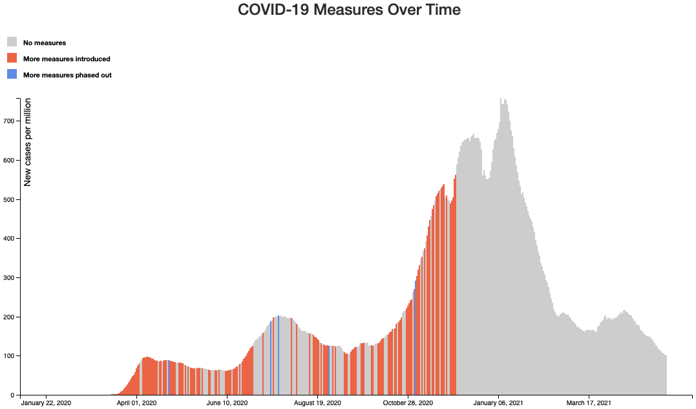

Abstract: As the COVID-19 pandemic spread around the world, many governments attempted a variety of mitigation strategies to curb the rise of cases and deaths in their countries. Some were more successful than others, but there exists no easy way of exploring these measures to investigate these important trends. We develop an interactive visualization to enable quick and simple exploration of pandemic-related measures by governments worldwide. This tool combines data on COVID-19 cases, deaths, and hospitalizations with detailed information about COVID-19 measures. Using the visualization, users can first browse the data at a high level on a world map and then narrow down to see more granular information about their country of interest. To avoid overloading the user with a multitude of confusing content and features, we emphasize simplicity as well as functionality. In particular, the tool targets policymakers to inform their decisions on future measures to implement. Indeed, we find that users can quickly and easily use our visualization to answer questions about COVID-19 measures. For example, a user can discover insights about measures the United States implemented around the second wave during summer 2020. The tool can be further improved and refined with more data, such as granular state-level measures.
There are no additional instructions or materials to run the software – just click here and enjoy!